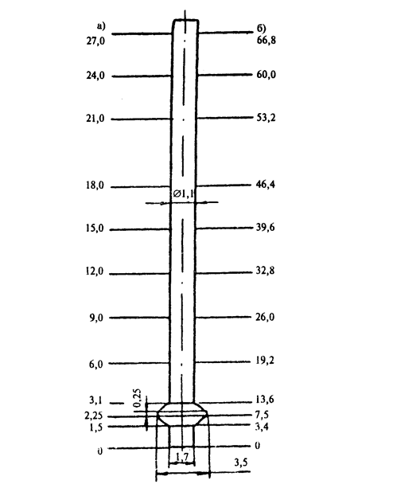

МИНИСТЕРСТВО ТРАНСПОРТНОГО СТРОИТЕЛЬСТВА
ВЕДОМСТВЕННЫЕ
СТРОИТЕЛЬНЫЕ НОРМЫ
УСТРОЙСТВО
СВАЙНЫХ ФУНДАМЕНТОВ МОСТОВ
(ИЗ БУРОВЫХ СВАЙ)
ВСН 165-85
Минтрансстрой
Москва 1985
СОДЕРЖАНИЕ
Разработаны в отделении искусственных сооружений ЦНИИС Минтрансстроя. Авторы: кандидаты техн. наук Е.А. Тюленев (руководитель), Н.М. Глотов, А.П. Рыженко,
Внесены: Всесоюзным ордена Октябрьской Революции научно-исследовательским институтом транспортного строительства.
Подготовлены к утверждению Отделом научно-исследовательских работ Главного технического управления Минтрансстроя.
С введением в действие ВСН 165-85 "Устройство свайных фундаментов мостов (из буровых свай)" утрачивают силу 'Технические указания по строительству фундаментов мостов из буровых и бурообсадных столбов (ВСН 165-70) Минтрансстроя,
Согласованы с Госстроем СССР 11.05.85 г. ДП-2035/ 1,
|
СССР Министерство транспортного строительства |
Ведомственные строительные нормы |
ВСН 165-85 Минтрансстрой |
|
Устройство свайных фундаментов мостов (из свай) буровых |
Взамен ВСН 165-70 |
1.1. Настоящие Нормы распространяются на производство работ по устройству в разных грунтах, за исключением вечномерзлых, фундаментов мостов из буронабивных или бурообсадных1 свай с уширенной пятой или без нее. Нормы устанавливают требования к специфическим видам работ по устройству буровых свай: бурению скважин и уширений в грунтах или погружению оболочек; установке арматурных каркасов в скважины; заполнению бетонной смесью скважин и уширенной полости в их нижней части (уширений).
Опалубочные, арматурные н бетонные работы по устройству ростверков фундаментов, а также по изготовлению арматурных каркасов, приготовлению, транспортированию, укладке, контролю качества бетонной смеси для свай, а также выдерживанию, уходу и контролю качества бетона свай должны выполняться в соответствии с требованиями СНиП III-43-75* СНиП III-15-76.
Организацию контроля качества работ следует осуществлять согласно СНиП III-1-76.
_______________
1Под термином "бурообсадная" следует понимать буронабивную сваю, боковая поверхность которой в пределах верхней части обсажена (закрыта) железобетонной или стальной сваей-оболочкой (оболочкой).
|
Внесены Всесоюзным ордена Октябрьской Революции научно-исследовательским институтом транспортного строительства |
Утверждены Министерством транспортного строительства от 14 августа 1985 г., № 243 |
Срок введения в действие 1 ноября 1985 г. |
1.2. Способ производства работ по устройству фундаментов следует выбирать на основании данных инженерно-геологических и гидрологических изысканий, выполняемых согласно требованиям "Указаний по инженерно-геологическим работам при изысканиях железнодорожных, автодорожных и городских мостовых переходов" (BCH 156-69) Минтрансстроя с учетом местных условий, особенностей конструкции и практического опыта устройства аналогичных фундаментов.
1.3. Фундаменты следует сооружать в соответствии с проектом производства работ, руководствуясь СНиП 3.02.01-83 и указаниями, приведенными в настоящих Нормах.
Проект производства работ должен соответствовать требованиям СН 47-74 и содержать чертежи: рабочих площадок в местах возведения фундаментов; размещения на подмостях технологического оборудования (бурового станка, насосов для подачи воды или глинистого раствора, глиномешалки, крана, бетонолитной трубы с ее подъемником); производства работ по заглублению оболочек, бурению скважин, изготовлению и установке в скважины арматурных каркасов, укладке бетонной смеси в скважины; опалубки и арматуры ростверка; производства работ по бетонированию ростверка.
Если фундаменты будут возводить при круглосуточных отрицательных температурах воздуха, в проекте производства работ необходимо предусмотреть меры по обеспечению: бесперебойной эксплуатации насосов, подающих в скважины воду или глинистый раствор, и глиномешалки, если применяют глинистый раствор; температуры бетонной смеси не ниже +5 °С, подлежащей укладке в скважины и ростверк, и проектных условий ее твердения.
2.1. Необходимое оборудование и технологию бурения скважин с уширением или без него следует выбирать на основании анализа результатов геологических, гидрогеологических и гидрологических изысканий места возведения фундамента, особенностей его конструкции и технических характеристик имеющегося бурового оборудования (справочное приложение 1).
2.2. Работы по бурению скважин и уширений следует производить, руководствуясь требованиями заводской инструкции по эксплуатации применяемого бурового оборудования и приведенными ниже указаниями.
2.3. При бурении скважин в глинистых грунтах их разработку допускается производить на 2 - 3 м ниже ножа обсадной трубы грейфером, ковшовым или шнековым буром, а затем осаживать трубу в образовавшееся углубление. Для такой технологии работ грейфер или бур должен быть обустроен направляющими, обеспечивающими его беспрепятственное извлечение из-под ножа обсадной трубы.
2.4. Водонасыщенные рыхлые и средней плотности пески следует удалять из скважин эрлифтом или гидроэлеватором при обеспечении постоянного долива воды в их полость в таком количестве, чтобы уровень ее в инвентарном патрубке превышал уровень воды в грунте не менее чем на 4 м.
2.5. Если окажется, что после окончания буровых работ нельзя сразу начать укладку бетонной смеси, бурение скважин следует прекратить, не доведя забой до проектной отметки на 1 - 2 м, а уширение не разбуривать.
2.6. Встречающиеся при бурении скважин в грунтах валуны, скальные прослойки или другие твердые препятствия следует разбуривать долотом, грейфером ударного действия или использовать для этой цели турбобуры.
2.7. Если нельзя преодолеть препятствие, встретившееся в процессе бурения скважин, решение о возможности их использования для устройства должна принять организация, проектировавшая фундамент.
2.8. Способ крепления боковой поверхности буримых скважин железобетонной оболочкой, оставляемой в конструкции сваи, обсадной трубой, глинистым раствором или избыточным давлением воды против возможного обрушения грунта следует выбирать в зависимости от особенностей конструкции сваи, применяемого технологического оборудования, физико-механических свойств грунта и наличии подземных или поверхностных вод, руководствуясь приведенными ниже указаниями.
В тугопластичных, полутвердых и твердых глинистых грунтах скважины допускается бурить без крепления боковой поверхности.
2.9. Обсадной трубой необходимо крепить всю поверхность скважин при бурении их вблизи фундаментов существующих зданий и сооружений.
2.10. Для обсадки скважин следует применять инвентарную, состоящую из отдельных стыкуемых на болтах между собой секций стальную трубу с внутренним диаметром на 5 - 10 см больше габаритного размера грунторазрабатывающего органа.
2.11. Длину инвентарной обсадной трубы, применяемой для крепления всей поверхности скважин, следует назначать, исходя из расположения ее верхнего конца минимум на 0,5 м выше уровня воды в акватории, а в пределах суши - не ниже поверхности грунта в месте бурения. При этом низ трубы должен быть заглублен минимум на 1 м ниже проектной отметки торца свай в мелкие и пылеватые пески, пластичные супеси и минимум на 0,5 м - в гравелистые, крупные и средней крупности пески, тугопластичные суглинки и глины.
2.12. Для предотвращения наплыва в обсадные трубы неустойчивых грунтов их следует разрабатывать с сохранением в полости трубы грунтового ядра высотой не менее половины ее диаметра. При этом требуется следить за тем, чтобы уровень воды в скважинах не менее чем на 1 м превышал уровень поверхностных или подземных вод.
Допускается разрабатывать такие грунты до низа ножа обсадной трубы при условии поддержания в ее полости уровня воды, превышающего минимум на 3 м уровень воды вне трубы.
2.13. Операции по задавливанию и извлечению инвентарной обсадной трубы специальным оборудованием применяемого бурильного станка следует выполнять согласно указаниям заводской инструкции по его эксплуатации.
Работы по заглублению оболочек должны выполняться согласно СНиП 3.02.01-83.
2.14. Избыточное давление воды при бурении скважин без обсадной трубы следует применять в случаях, определенных СНиП 3.02.01-83.
2.15. Если крепление поверхности скважин осуществляют избыточным давлением воды или глинистым раствором, в пределах их устья необходимо установить инвентарный патрубок, предотвращающий возможность осыпания грунта.
Длину патрубка назначают, руководствуясь данными таблицы, и уточняют опытным путем, особенно при выполнении работ на местности, покрытой водой.
2.16. Глинистый раствор требуется применять для крепления скважин во всех случаях, когда отсутствует оборудование с инвентарными обсадными трубами и невозможно использовать избыточное давление воды, а также при бурении уширений в песчаных грунтах.
Состав и условия применения глинистого раствора должны отвечать требованиям разд. 7 и 8 СНиП 3.02.01-83.
2.17. Работы по бурению скважин или погружению оболочек необходимо систематически контролировать, руководствуясь СНиП 3.02.01-83.
2.18. Из несущего пласта нескального грунта следует отобрать три образца для визуального их освидетельствования при оформлении акта приемки пробуренной скважины.
2.19. Контроль качества погружения оболочек или бурения скважин и уширений возлагается на мастера, руководящего буровыми работами.
Результаты погружения каждой оболочки или бурения каждой скважины должны быть отражены в журнале производства работ и в приложенной к нему сводной ведомости погруженных оболочек или пробуренных скважин.
2.20. Каждую погруженную оболочку или пробуренную до проектной отметки скважину с уширением или без него необходимо освидетельствовать и принять в порядке, установленном в разд. 8 СНиП III-1-76.
|
Метод крепления боковой поверхности скважины |
Конец патрубка |
Рас положение концов патрубка при бурении скважин |
|
|
на суше или с островка |
на местности, покрытой водой |
||
|
Избыточным давлением воды |
Верхний |
Не ниже поверхности грунта и не менее чем на 0,5 м выше уровня воды в патрубке |
Минимум на 0,5 м выше уровня воды в патрубке |
|
|
Нижний |
Не менее 3 м ниже поверхности грунта |
Минимум на 3 м ниже дна с учетом его размыва у патрубка |
|
Глинистым раствором |
Верхний |
Вровень с поверхностью грунта |
Минимум на 0,5 м выше уровня воды с учетом волны |
|
Нижний |
Не менее 2 м ниже уровня подземной воды |
Минимум на 3 м ниже дна с учетом его размыва у патрубка |
|
2.21. Диаметр скважины, крепление которой производят избыточным давлением воды или глинистым раствором, следует контролировать с помощью ковшового бура и цилиндрических направляющих буровой колонны при их опускании или подъеме.
При использовании грейферов диаметр скважины, ее глубину и форму необходимо контролировать с помощью мерника, опускаемого в готовую скважину на тросе. Глубину опускания мерника в скважину определяют по меткам на тросе.
Контроль формы и диаметр уширения следует производить с помощью применявшегося уширителя.
2.22. Отклонения фактических размеров скважины и уширения от проектных не должны превышать следующих значений: по глубине скважины и месту расположения уширения ±10 см; по диаметру скважины ±5 см; по диаметру уширения ±10 см; по высоте цилиндрической части уширения ±5 см.
2.23. Отклонение (суммарное от наклона, горизонтального смещения в плане) фактического положения от проектного свай, расположенных в составе фундамента (по фасаду моста) в два и более рядов, не должно превышать следующих значений: в плане на уровне поверхности суши 0,95 d, на уровне акватории 0,1 d, в наклоне оси 100:1, а для однорядных по фасаду моста фундаментов, соответственно 0,02 d; 0,04 d и 200:1 (здесь d - диаметр сваи).
3.1. Сваи надлежит, как правило, армировать заранее изготовленными каркасами проектной длины. Допускается собирать арматурные каркасы из отдельных секций в соответствии с проектом производства таких работ.
3.2. До установки каркаса в скважину необходимо проверить, соответствует ли наружный диаметр каркаса (в местах закрепления фиксаторов защитного слоя) диаметру обсадной трубы, а также очищены ли стержни от ржавчины, масла и грунта.
3.3. Способы строповки, поднятия, перемещения и опускания арматурного каркаса в скважину должны исключать возможность появления остаточных деформаций каркаса или отдельных его стержней, а также нарушения устойчивости грунта боковой поверхности скважины.
3.4. В целях предотвращения подъема арматурного каркаса в процессе бетонирования свай его необходимо заанкерить. Для этого в сваях, армированных только в верхней части, следует к двум диаметрально расположенным стержням каркаса приварить два стержня, имеющих длину до дна скважины и снабженных на нижнем конце анкерами в виде коротышей из уголков. Анкеровку каркаса, начинающегося от дна скважин, допускается осуществлять с помощью коротышей из уголков, приваренных непосредственно к нижнему кольцу жесткости.
3.5. Для обеспечения контроля положения каркаса по глубине скважины после его установки и в процессе укладки бетонной смеси необходимо к одному из продольных стержней (в начальный период опускания каркаса в скважину) приварить стержень такой длины, чтобы его верх возвышался на 10 - 20 см над обсадной трубой или патрубком.
4.1. Если невозможно уложить бетонную смесь насухо в полость оболочки, скважины и уширения, следует применить подводную укладку ее методом ВПТ, осуществляемую под воздействием собственного веса литой смеси или под воздействием на малоподвижную смесь вибраторов, закрепленных к нижнему концу бетонолитных труб.
Использование бетононасоса для укладки смеси в скважины допускается после освоения технологии производства таких работ.
4.2. Укладку смеси методом ВПТ следует производить, руководствуясь СНиП III-15-76 и дополнительными указаниями, приведенными ниже.
4.3. Перед опусканием бетонолитной трубы необходимо отвесом проверить отметку дна скважины. Если замеренная отметка дна превысит более чем на 5 см отметку, полученную по окончании бурения скважины, то осыпавшийся грунт необходимо удалить.
4.4. Непосредственно перед подводной укладкой бетонной смеси в скважину, пробуренную в скальном грунте, необходимо с поверхности забоя смыть буровой шлам, используя для этой цели эрлифт и укрепленные на бетонолитной трубе подмывные трубки. Для промывки следует обеспечить подачу воды под давлением 0,8 - 1 МПа при расходе 150 - 300 м3/ч .
Промывку следует продолжать 5 - 15 мин до исчезновения остатков шлама, о чем должен свидетельствовать цвет воды, переливающейся через край обсадной трубы или патрубка.
Промывку необходимо прекращать только в момент начала движения бетонной смеси в бетонолитной трубе.
4.5. Уровень укладываемой в скважину бетонной смеси, по которому контролируют заглубление низа трубы в смесь, а также ее уровень в трубе следует замерять с точностью до 10 см: в вертикальных скважинах - с помощью отвеса или поплавка, в наклонных - с помощью поплавка.
4.6. После подъема уровня бетонной смеси до низа арматурного каркаса необходимо следить за его положением в скважине, не допуская поднятия его смесью, поступающей из бетонолитной трубы.
4.7. В процессе бетонирования свай следует строго выполнять требования к подбору состава бетонной смеси, обеспечению минимально допустимого заглубления трубы в укладываемую смесь и необходимой интенсивности бетонирования. При несоблюдении этих требований происходит закупоривание трубы смесью или прорыв воды в трубу.
4.8. Закупоривание бетонолитной трубы следует устранять путем ее встряхивания (резким подъемом и опусканием в пределах допустимого заглубления) или включением вибратора, расположенного в основании воронки, а при необходимости использовать оба эти способа. При наличии движения смеси трубу нужно быстро опустить.
Если закупоривание трубы не устранено указанными выше способами, бетонирование следует прекратить, извлечь трубу из скважины, удалить из нее бетонную смесь очистить и промыть водой.
4.9. В случае прорыва воды или глинистого раствора в бетонолитную трубу через появившиеся в процессе бетонирования неплотности во фланцевых соединениях отдельных звеньев или через низ трубы вследствие недостаточного ее заглубления в смесь, а также при неосторожном подъеме бетонирование следует немедленно прекратить, извлечь и промыть бетонолитную трубу.
4.10. Немедленное возобновление бетонирования сваи следует производить приемами, обеспечивающими поступление свежей смеси в массив ранее уложенной смеси до начала ее схватывания без соприкосновения с водой или глинистым раствором, например, путем использования бетонолитной трубы с донной крышкой.
4.11. После длительного перерыва бетонирования сваи в пределах участка с арматурным каркасом работы допускается продолжить, предварительно удалив насухо поверхностный слой шлама и слабого бетона в пределах не только каркаса, но и защитного слоя.
При использовании инвентарной обсадной трубы ее необходимо на случай длительного перерыва бетонирования приподнять до уровня, при котором в ней остается слой бетонной смеси высотой 0,5 - 0,7 м, и периодически проворачивать во избежание схватывания трубы с бетоном.
Если скважину не удается осушить для продолжения прерванных работ по бетонированию сваи, решение о возможности ее использования в составе фундамента должно быть принято организацией, проектировавшей фундамент.
4.12. После укладки в скважину каждый 4 м3 бетонной смеси следует определять ее уровень, сравнивая фактически уложенный объем смеси с вычисленным согласно рекомендуемому приложению 2. Положение уровня смеси следует дополнительно контролировать после каждого подъема бетонолитной трубы и после окончания бетонирования.
Отклонения объема бетонной смеси от объема скважины, вычисленного по фактическим размерам, не должны превышать:
в песчаных грунтах плюс 25 % и минус 12 %;
в глинистых грунтах плюс 15 % и минус 10 %.
4.13. При выбуривании керна следует обращать особое внимание на режим бурения в зоне контакта слоя бетона, уложенного с нарушением требований бетонирования, с нормально уложенным или с забоем скважины в скальном грунте. Быстрое погружение (провал) бурового инструмента в этой зоне свидетельствует о наличии прослойки шлама, образовавшегося в результате нарушения режима подводного бетонирования. Это обстоятельство необходимо отметить в журнале бурения керна, указав отметку и глубину провала инструмента.
5.1. Настоящие указания по технике безопасности охватывают производство специфических работ по возведению фундаментов из буровых свай и являются дополнительными к действующим инструкциям по эксплуатации оборудования, механизмов и устройств, а также к требованиям техники безопасности общестроительных работ, изложенных в действующих "Правилах техники безопасности и производственной санитарии при сооружении мостов и труб" (М., Оргтрансстрой, 1969) и в СНиП III-4-80/
5.2. Рабочие подмости должны обладать необходимой прочностью и устойчивостью при различных положениях станка в процессе бурения скважин.
5.3. Запрещается производить какие-либо работы по устранению неисправностей станка при подвешенном рабочем органе. Неисправности станка и рабочих органов допускается устранять после установки и закрепления их в устойчивом положении.
5.4. Операции по разгрузке и очистке от грунта невращающегося бура или уширителя должны осуществляться рабочими, находящимися сбоку от них на расстоянии не менее 1 м. Если бур или уширитель вращается, персоналу запрещается приближаться к ним на расстояние менее 2 м.
5.5. Во время подъема и опускания бура, уширителя, грейфера или перемещения их в сторону (для разгрузки от грунта, смены или ремонта) рабочим запрещается находиться в радиусе менее 3 м от перемещаемого над поверхностью грунта рабочего органа.
5.6. Для выполнения работ над скважиной, в том числе при затяжке болтов в стыках элементов буровой колонны, скважину следует закрыть съемными щитами.
5.7. Работа водолаза для подводного обследования забоя скважины или других целей допускается только в пределах зоны заглубления обсадной трубы в присутствии сменного мастера, отвечающего непосредственно за безопасность работы водолаза. Запрещается опускаться водолазу ниже трубы, которая обсаживает скважину на части ее глубины.
5.8. Оболочки или арматурные каркасы для подъема их из горизонтального положения в вертикальное следует строповать согласно разработанным схемам, обеспечивающим безопасность работающих и исключающим возможность деформации и случайного излома оболочки или каркаса. Конструкция захвата должна исключать возможность самопроизвольного отсоединения стропа в случае непредвиденного опирания оболочки или каркаса о какое-либо препятствие.
5.9. Во время перемещения оболочки или каркаса краном рабочие должны находиться за пределами опасной зоны.
Подход рабочих к скважине разрешается после того, как низ каркаса будет располагаться над обсадной трубой (или патрубком) на высоте 0,1 - 0,2 м от ее верха.
5.10. При бетонировании полости оболочек или скважин и уширений, осуществляемом на одной площадке параллельно с буровыми работами, контроль за соблюдением рабочими правил техники безопасности возлагается на производителя работ и сменных мастеров.
5.11. Кран, предназначенный для подачи бетонной смеси в бункер или в воронку бетонолитной трубы, должен быть установлен так, чтобы перемещение бадьи производилось вне пределов зоны нахождения рабочих, занятых на укладке бетонной смеси.
5.12. У приемного бункера необходимо устроить площадку с перилами для размещения рабочих, принимающих бетонную смесь.
5.13. Выгрузку бетонной смеси из бадьи допускается производить при возвышении ее низа над бункером не более 1 м.
5.14. Строповку, подвозку, укорочение и извлечение бетонолитной трубы, а также ее первоначальное заполнение бетонной смесью необходимо производить под руководством сменного мастера.
______________________________
* По термином "бурообсадная" следует понимать буронабивную сваю, боковая поверхность которой в пределах верхней части обсажена (закрыта) железобетонной или стальной сваей-оболочкой (оболочкой).
Техническая характеристика буровых станков
|
Характеристики |
ЦНИИС |
МБНА-1 |
МБС-1.7Д |
Турбобур |
РТБ 1310 |
РТЕ 2600 |
УКС-30 |
ВС-1М. |
БС-2 |
Като-30ТНД |
Като-FF-1200 |
|
Диаметр скважияы, м |
1.5 |
0,7 - 1 |
1,3 - 1,7 |
1,3 |
1,3 |
2,6 |
0,9 - 1.3 |
0,6 - 1 |
I |
I 2; 1,5; 1.7 |
0,96-1,1 |
|
Диаметр уширения, м |
3,5 |
2,5 |
3,5 |
- |
- |
- |
- |
- |
- |
- |
- |
|
Предельная глубина бурения, м |
40 |
20 |
28 |
30 |
30 |
50 |
50 |
5С |
50 |
40-30-24 |
16 |
|
Наружный диаметр обсадных труб, м |
- |
I |
- |
- |
- |
- |
- |
- |
- |
I. IВ; 1,48; I.t* |
1,1 |
|
Предельный наклон оси скважины |
4:1 |
4:1 |
- |
- |
- |
- |
- |
- |
- |
- |
- |
|
Рабочие органы |
Ковшовый 6yр уширителъ |
Ковшовый 6yр уширителъ |
Ковшовый 6yр уширителъ, долото, грейфер |
Долото турбобура |
2 турбобура |
3 желонка |
-Долото, желонка |
Долото, долото |
Долото, желонка |
Грейфер, долото |
Ковшовый , шнековый и шарошечный буры, грейфер |
|
Крутящий момент, кН м |
58,8 |
29,4 |
96,5 |
- |
- |
- |
- |
- |
- |
- |
95,5 |
|
Мощность двигателя, кВт |
82 |
66 |
210 |
288 |
577 |
865 |
40 |
75 |
75 |
162 |
165 + 165** |
|
Масса, т |
20* |
31.5 |
70 |
4.5 |
18.8 |
30,6 |
12.7 |
22 |
24 |
43,1 |
53 + 22** |
|
* Без массы копра ** Второе значение относится к вакуумной отсасывающей установке, работающей совместно с основной машиной на бурении скважин в скальных грунтах |
|||||||||||
Контроль заглубления бетонолитной трубы в бетонную смесь, укладываемую в скважину
1. Глубину погружения низа бетонолитной трубы в бетонную смесь необходимо периодически контролировать, вычисляя уровень уложенной смеси путем сопоставления ее объема с объемом скважины. Для упрощения вычислений рекомендуется использовать схемы по аналогии с изображенной на рисунке. Контроль заглубления следует вести по форме, приведенной в табл. 1.
Таблица 1
|
№ п/п |
Объем смеси (в доставленной порции) замеренной бадьей, мЗ |
Фактический объем уложенной смеси V, м3 |
Высота столба смеси от дна скважины, м |
Расстояние от поверхности смеси до условного уровня, м |
Длина бетонолитной трубы от низа до условного уровня, м |
Заглубление бетонолитной трубы в смесь, м |
|
|
|
|
|
|
|
|
2. Объем уложенной бетонной смеси V допускается замерять на месте укладки с помощью протарированной бадьи.
3. Объем скважины Vd надлежит определять по ее фактическим размерам, выявленным во время приемки.
4. Положение низа бетонолитной трубы в скважине следует определять, используя разметку на трубе.
5. Контроль заглубления низа бетонолитной трубы в смесь требуется производить после укладки каждой порции смеси, доставленной к месту бетонирования, но не реже чем после каждых 4 м3.
6. В качестве дополнительного контроля фактических размеров сваи необходимо сравнить полный объем уложенной бетонной смеси с объемом, вычисленным по фактическому уровню последней и проектным размерам сваи (табл. 2).

Схема зависимости объема уложенной бетонной смеси от уровня
ее в скважине:
а - уровень смеси в скважине, м; б
- .объем уложенной смеси, м3
6. В качестве дополнительного контроля фактических размеров сваи необходимо сравнить полный объем уложенной бетонной смеси с объемом, вычисленным по фактическому уровню последней и проектным размерам сваи (табл. 2).
Таблица 2
Сводная ведомость забетонированных скважин
|
Фактический объем уложенной смеси V, м3 |
Отметка фактического уровня смеси в скважине, м |
Вычисленный объем столба Vd, соответствующий фактическому уровню смеси, м3 |
Разница объемов V - Vd |
|
|
м3 |
% |
|||
|
|
|
|
|
|
|
|
|
|
|
|
|
|
|
|
|
|